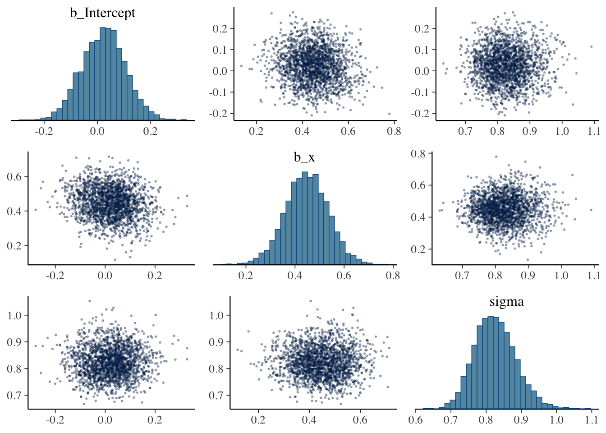
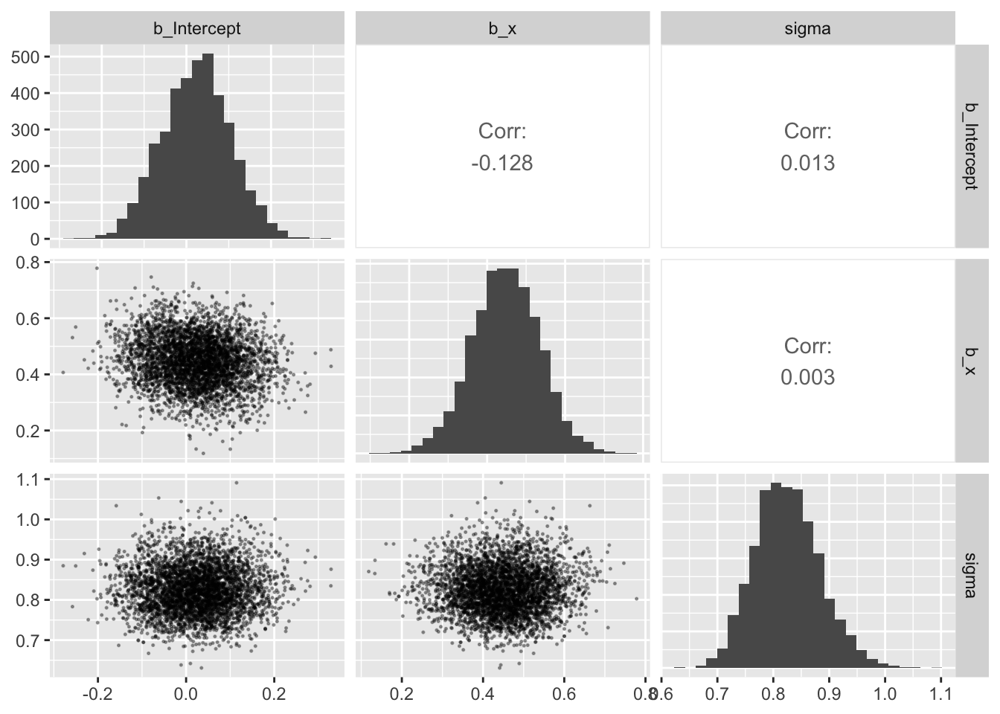
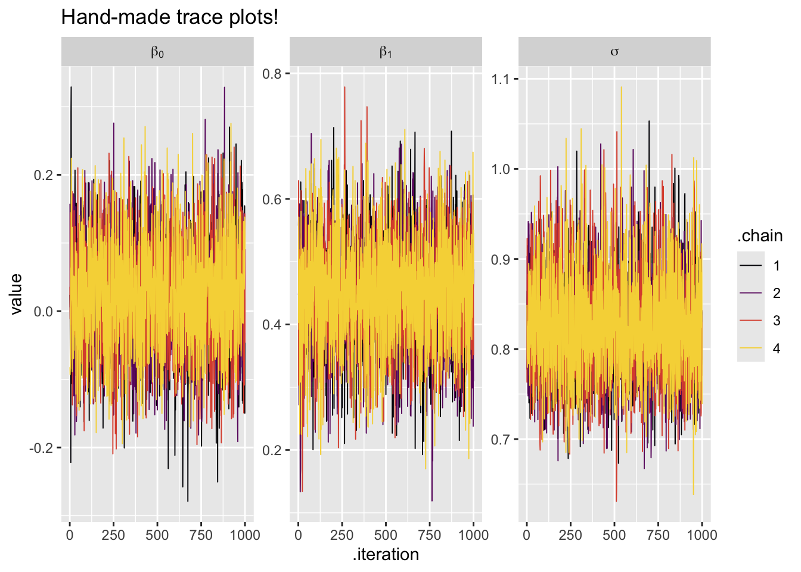
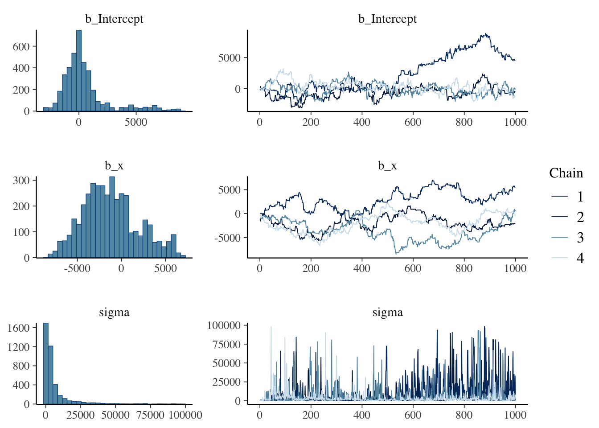

library(tidyverse)
library(faux)
library(GGally)
library(brms)
library(ggmcmc)
library(bayesplot)This worksheet helps to give you a better idea about what to do with the trace plots.
Packages and data
Load the primary packages.
This time we’ll simulate data with the faux package.
# how many cases?
n <- 100
# population values
mu <- 0
sigma <- 1
rho <- .5
# simulate and save
set.seed(1)
d <- rnorm_multi(
n = n,
mu = c(mu, mu),
sd = c(sigma, sigma),
r = rho,
varnames = list("x", "y")
)
glimpse(d)Rows: 100
Columns: 2
$ x <dbl> -0.232341576, 0.137981847, -0.268214782, 1.302539315, 0.612654423, -…
$ y <dbl> -0.85270825, 0.18009772, -1.17913643, 1.46056809, -0.04193022, 0.173…We might look at the data with a ggpairs() plot.
d %>%
ggpairs(diag = list(continuous = wrap("barDiag", binwidth = 0.25)),
upper = list(continuous = wrap("cor", stars = FALSE)))Check the sample statistics.
# univariate
d %>%
pivot_longer(everything()) %>%
group_by(name) %>%
summarise(m = mean(value),
s = sd(value))# A tibble: 2 × 3
name m s
<chr> <dbl> <dbl>
1 x 0.113 0.914
2 y 0.0754 0.913# bivariate
d %>%
summarise(r = cor(y, x)) r
1 0.4502206Base model
Let’s fit a simple model
\[ \begin{align} y_i & \sim \operatorname{Normal}(\mu_i, \sigma) \\ \mu_i & = \beta_0 + \beta_1 x_i \\ \beta_0 & \sim \operatorname{Normal}(0, 1) \\ \beta_1 & \sim \operatorname{Normal}(0, 1) \\ \sigma & \sim \operatorname{Exponential}(1), \end{align} \]
As we fit the model with brm(), take the opportunity to consider some of the default settings.
fit13.b <- brm(
data = d,
family = gaussian,
y ~ 1 + x,
prior = prior(normal(0, 1), class = Intercept) +
prior(normal(0, 1), class = b) +
prior(exponential(1), class = sigma),
seed = 13,
# default settings we've been ignoring up to this point
iter = 2000, warmup = 1000, chains = 4, cores = 1
# if you have a good computer, maybe try setting cores = 4
)Compiling Stan program...Trying to compile a simple C fileStart samplingIf you’d like to use multiple cores, but you’re not sure how many you have, execute parallel::detectCores().
Question 1: How many cores do you have?
10
parallel::detectCores()[1] 10Check the model summary.
summary(fit13.b) Family: gaussian
Links: mu = identity; sigma = identity
Formula: y ~ 1 + x
Data: d (Number of observations: 100)
Draws: 4 chains, each with iter = 2000; warmup = 1000; thin = 1;
total post-warmup draws = 4000
Regression Coefficients:
Estimate Est.Error l-95% CI u-95% CI Rhat Bulk_ESS Tail_ESS
Intercept 0.02 0.08 -0.14 0.18 1.00 3741 3084
x 0.45 0.09 0.27 0.62 1.00 4125 3260
Further Distributional Parameters:
Estimate Est.Error l-95% CI u-95% CI Rhat Bulk_ESS Tail_ESS
sigma 0.83 0.06 0.72 0.95 1.00 3939 3163
Draws were sampled using sampling(NUTS). For each parameter, Bulk_ESS
and Tail_ESS are effective sample size measures, and Rhat is the potential
scale reduction factor on split chains (at convergence, Rhat = 1).Look at the parameter posteriors in a pairs() plot.
pairs(fit13.b,
off_diag_args = list(size = 1/3, alpha = 1/3))
The pairs() plot is a wrapper around the mcmc_pairs() function from bayesplot. By default, half of the chains are depicted in the scatter plots below the diagonal, and the other half are displayed above the diagonal. The basic idea is you want the results form different chains to mirror one another. You can control this behavior with the condition argument.
pairs(fit13.b,
off_diag_args = list(size = 1/3, alpha = 1/3),
# here we put the first chain in above the diagonal,
# and we put the second through fourth chains below the diagonal
condition = pairs_condition(chains = list(1, 2:4)))This particular arrangement is a little silly, but it should give you a sense of how to control the output. Also, by default the histograms on the diagonal use the draws from all the chains.
If you wanted, you could also make a similar kind of plot with ggpairs().
as_draws_df(fit13.b) %>%
select(b_Intercept:sigma) %>%
ggpairs(diag = list(continuous = wrap("barDiag", bins = 25)),
upper = list(continuous = wrap("cor", stars = FALSE)),
lower = list(continuous = wrap("points", size = 1/4, alpha = 1/3)))
Now take a look at the plot() output.
plot(fit13.b, widths = c(1, 2))These trace plots look like a dream. They have the appearance of fuzzy caterpillars, which is why they’re even sometimes called caterpillar plots.
Let’s work directly with the chains via as_draws_df().
as_draws_df(fit13.b) %>%
# notice the 3 meta-data columns at the end
glimpse()Rows: 4,000
Columns: 9
$ b_Intercept <dbl> 0.023961191, 0.008764307, -0.066725637, -0.085990390, 0.01…
$ b_x <dbl> 0.5574909, 0.5822172, 0.4748096, 0.4267265, 0.4081808, 0.4…
$ sigma <dbl> 0.8455813, 0.8642759, 0.7653377, 0.9147409, 0.8412759, 0.7…
$ Intercept <dbl> 0.08707099, 0.07467320, -0.01297564, -0.03768355, 0.063654…
$ lprior <dbl> -2.842647, -2.874429, -2.716021, -2.844376, -2.764485, -2.…
$ lp__ <dbl> -124.8296, -125.3474, -125.0186, -126.0295, -124.1495, -13…
$ .chain <int> 1, 1, 1, 1, 1, 1, 1, 1, 1, 1, 1, 1, 1, 1, 1, 1, 1, 1, 1, 1…
$ .iteration <int> 1, 2, 3, 4, 5, 6, 7, 8, 9, 10, 11, 12, 13, 14, 15, 16, 17,…
$ .draw <int> 1, 2, 3, 4, 5, 6, 7, 8, 9, 10, 11, 12, 13, 14, 15, 16, 17,…We can use those meta-data columns to make our own trace plots with ggplot functions.
as_draws_df(fit13.b) %>%
pivot_longer(b_Intercept:sigma) %>%
mutate(.chain = factor(.chain),
# not needed, but makes for Greek formatted strip labels
greek = case_when(
name == "b_Intercept" ~ "beta[0]",
name == "b_x" ~ "beta[1]",
name == "sigma" ~ "sigma"
)) %>%
ggplot(aes(x = .iteration, y = value, color = .chain)) +
geom_line(linewidth = 1/3) +
scale_color_viridis_d(option = "B", end = .9) +
ggtitle("Hand-made trace plots!") +
facet_wrap(~ greek, labeller = label_parsed, scales = "free_y")
We might restrict to the first few post-warmup iterations to help give us a better sense of what’s happening.
as_draws_df(fit13.b) %>%
filter(.iteration < 21) %>%
pivot_longer(b_Intercept:sigma) %>%
mutate(.chain = factor(.chain),
# not needed, but makes for nice formatting
greek = case_when(
name == "b_Intercept" ~ "beta[0]",
name == "b_x" ~ "beta[1]",
name == "sigma" ~ "sigma"
)) %>%
ggplot(aes(x = .iteration, y = value, color = .chain)) +
geom_line(linewidth = 1) +
scale_color_viridis_d(option = "B", end = .9) +
ggtitle("Hand-made trace plots (zoomed in)") +
facet_wrap(~ greek, labeller = label_parsed, scales = "free_y")Note that these are all post-warmup draws. The brms package doesn’t make it easy to visualize the warmup draws. But we can do so with a little help from the ggmcmc package’s ggs() function.
# first execute without summarise()
ggs(fit13.b) %>%
summarise(min = min(Iteration),
max = max(Iteration))# A tibble: 1 × 2
min max
<int> <int>
1 1 2000Note how how the values in the Iteration column range from 1 to 2,000. By brms default, the first 1,000 of those iterations are the warmup’s. Here is how we can use the ggs() output to make trace plots that include the warmup draws.
ggs(fit13.b) %>%
filter(Parameter != "lprior") %>%
mutate(Chain = factor(Chain),
greek = case_when(
Parameter == "b_Intercept" ~ "beta[0]",
Parameter == "b_x" ~ "beta[1]",
Parameter == "sigma" ~ "sigma"
)) %>%
ggplot(aes(x = Iteration, y = value, color = Chain)) +
# this marks off the warmups
annotate(geom = "rect",
xmin = 0, xmax = 1000, ymin = -Inf, ymax = Inf,
fill = "black", alpha = 1/6, linewidth = 0) +
geom_line(linewidth = 1/3) +
scale_color_viridis_d(option = "B", end = .9) +
labs(title = "More hand-made trace plots",
subtitle = "warmup/post-warmup by background") +
facet_wrap(~ greek, labeller = label_parsed, scales = "free_y")Let’s take a closer look at the first few warmup iterations.
ggs(fit13.b) %>%
filter(Parameter != "lprior") %>%
mutate(Chain = factor(Chain),
greek = case_when(
Parameter == "b_Intercept" ~ "beta[0]",
Parameter == "b_x" ~ "beta[1]",
Parameter == "sigma" ~ "sigma"
)) %>%
ggplot(aes(x = Iteration, y = value, color = Chain)) +
annotate(geom = "rect",
xmin = 0, xmax = 1000, ymin = -Inf, ymax = Inf,
fill = "black", alpha = 1/6, linewidth = 0) +
geom_line(linewidth = 2/3) +
scale_color_viridis_d(option = "B", end = .9) +
coord_cartesian(xlim = c(0, 50)) +
labs(title = "More hand-made trace plots (zoomed in)",
subtitle = "warmup only") +
facet_wrap(~ greek, labeller = label_parsed, scales = "free_y")Question 2: Can you use the results here to describe the need for discarding warmup draws?
It is needed because at the very beginning, the algorithm is still very unstable and exploring a wide variety of options. It is not converging until later on (when the lines overlap with each other a lot more).
Another issue is autocorrelation, the degree to which a given HMC draw is correlated with the previous draw(s). We can make a plot of the autocorrelations with the mcmc_acf() function from the bayesplot package.
fit13.b %>%
mcmc_acf(pars = vars(b_Intercept, b_x, sigma),
lags = 10) # lags = 20 is the defaultThis is what we like to see: Nice L-shaped autocorrelation plots. Low autocorrelations like this are one of the major achievements of Stan’s implementation of HMC. It’s not uncommon for MCMC via the older Gibbs sampler method to routinely show much higher autocorrelations. You can get a sense of this by comparing the various models in Kruschke’s (2015) textbook, which often uses the Gibbs sampler, versus their brms() analogues in my (2023) ebook translation.
Note
Mixing describes how efficiently MCMC chains explore the posterior distribution. Good mixing means samples move freely across the parameter space. And high autocorrelation => poor mixing.
Question 3: Why are L-shaped autocorrelation plots are desirable? What would an undesirable autocorrelation plot look like?
Having the autocorrelation going down/near zero is good because it means that each consecutive draw is independent of each other, meaning that for each draw, we are able to get almost entirely new info -> making it more effective.
Those low autocorrelations also have a lot to do with our effective sample size (ESS) estimates. Take another look at the summary() output.
summary(fit13.b) Family: gaussian
Links: mu = identity; sigma = identity
Formula: y ~ 1 + x
Data: d (Number of observations: 100)
Draws: 4 chains, each with iter = 2000; warmup = 1000; thin = 1;
total post-warmup draws = 4000
Regression Coefficients:
Estimate Est.Error l-95% CI u-95% CI Rhat Bulk_ESS Tail_ESS
Intercept 0.02 0.08 -0.14 0.18 1.00 3741 3084
x 0.45 0.09 0.27 0.62 1.00 4125 3260
Further Distributional Parameters:
Estimate Est.Error l-95% CI u-95% CI Rhat Bulk_ESS Tail_ESS
sigma 0.83 0.06 0.72 0.95 1.00 3939 3163
Draws were sampled using sampling(NUTS). For each parameter, Bulk_ESS
and Tail_ESS are effective sample size measures, and Rhat is the potential
scale reduction factor on split chains (at convergence, Rhat = 1).There used to be a single ESS column. Starting with version 2.10.0, brms returns two columns: Bulk_ESS and Tail_ESS. These originate from Vehtari et al (2019). From the paper, we read:
When reporting quantile estimates or posterior intervals, we strongly suggest assessing the convergence of the chains for these quantiles. In Section 4.3, we show that convergence of Markov chains is not uniform across the parameter space, that is, convergence might be different in the bulk of the distribution (e.g., for the mean or median) than in the tails (e.g., for extreme quantiles). We propose diagnostics and effective sample sizes specifically for extreme quantiles. This is different from the standard ESS estimate (which we refer to as bulk-ESS), which mainly assesses how well the centre of the distribution is resolved. Instead, these “tail-ESS” measures allow the user to estimate the MCSE for interval estimates. (pp. 672-673)
We generally like the values in both the Bulk_ESS and Tail_ESS columns to be as close to the total number of post-warmup draws as possible, which would be 4,000 for a default brm() model. Sometimes, as in the case of the Bulk_ESS value for our \(\beta_1\) parameter, the HMC chains are so efficient that we can get larger numbers than the actual number of post-warmup draws. This is related to when we have negative autocorrelations (see above).
How much is enough, and how low is too low? Yeah, indeed… Higher is generally better, with diminishing returns rolling in somewhere between 1,000 and 10,000. brms will give you a warning message when the ESS estimates get below a couple hundred.
Now look back at the Rhat column in the summary() output. This is the potential scale reduction factor \(\hat R\). It has its origins in Gelman & Rubin (1992), but the current version used in brms is from Vehtari et al (2019), as cited above. In short, it is something of a ratio of the between-chain variation versus the within-chain variation. This ratio is usually a little above 1, and we want it to be as close to 1 as possible. The Stan team (e.g., https://mc-stan.org/rstan/reference/Rhat.html) recommends against values greater than 1.05. In our case, we’re good to go.
What bad chains look like..
Now let’s break the model. This time, we’ll subset the d data to just the first 2 rows, we’ll make the priors very wide on the scale of the data, and we’ll dramatically reduce the warmup period.
fit14.b <- brm(
data = d %>% slice(1:2),
family = gaussian,
y ~ 1 + x,
# don't use priors like this for real data analyses
prior = prior(normal(0, 100000), class = Intercept) +
prior(normal(0, 100000), class = b) +
prior(uniform(0, 100000), class = sigma),
seed = 14,
iter = 1100, warmup = 100, chains = 4, cores = 4
)Warning: It appears as if you have specified an upper bounded prior on a parameter that has no natural upper bound.
If this is really what you want, please specify argument 'ub' of 'set_prior' appropriately.
Warning occurred for prior
<lower=0> sigma ~ uniform(0, 1e+05)Compiling Stan program...Trying to compile a simple C fileStart samplingWarning: There were 801 divergent transitions after warmup. See
https://mc-stan.org/misc/warnings.html#divergent-transitions-after-warmup
to find out why this is a problem and how to eliminate them.Warning: There were 1855 transitions after warmup that exceeded the maximum treedepth. Increase max_treedepth above 10. See
https://mc-stan.org/misc/warnings.html#maximum-treedepth-exceededWarning: Examine the pairs() plot to diagnose sampling problemsWarning: The largest R-hat is 1.88, indicating chains have not mixed.
Running the chains for more iterations may help. See
https://mc-stan.org/misc/warnings.html#r-hatWarning: Bulk Effective Samples Size (ESS) is too low, indicating posterior means and medians may be unreliable.
Running the chains for more iterations may help. See
https://mc-stan.org/misc/warnings.html#bulk-essWarning: Tail Effective Samples Size (ESS) is too low, indicating posterior variances and tail quantiles may be unreliable.
Running the chains for more iterations may help. See
https://mc-stan.org/misc/warnings.html#tail-essCheck the parameter summary.
print(fit14.b)Warning: Parts of the model have not converged (some Rhats are > 1.05). Be
careful when analysing the results! We recommend running more iterations and/or
setting stronger priors.Warning: There were 801 divergent transitions after warmup. Increasing
adapt_delta above 0.8 may help. See
http://mc-stan.org/misc/warnings.html#divergent-transitions-after-warmup Family: gaussian
Links: mu = identity; sigma = identity
Formula: y ~ 1 + x
Data: d %>% slice(1:2) (Number of observations: 2)
Draws: 4 chains, each with iter = 1100; warmup = 100; thin = 1;
total post-warmup draws = 4000
Regression Coefficients:
Estimate Est.Error l-95% CI u-95% CI Rhat Bulk_ESS Tail_ESS
Intercept 478.83 2036.34 -1979.74 6652.81 1.46 8 13
x -1228.64 3124.10 -6776.94 5668.31 1.88 6 15
Further Distributional Parameters:
Estimate Est.Error l-95% CI u-95% CI Rhat Bulk_ESS Tail_ESS
sigma 6231.76 11923.16 165.35 42287.98 1.13 22 336
Draws were sampled using sampling(NUTS). For each parameter, Bulk_ESS
and Tail_ESS are effective sample size measures, and Rhat is the potential
scale reduction factor on split chains (at convergence, Rhat = 1).Never ignore Warning messages like that.
Those Rhat, Bulk_ESS, and Tail_ESS look really bad. Also notice how large the posterior means (Estimate) and standard deviations (Est.Error) are. Seems off, eh?
Let’s investigate further with a pairs() plot.
plot(fit14.b, widths = c(1, 2))
This is a full-scale disaster. DO NOT trust model results from chains that look like this.
In this case, just giving the model a longer warmup period helped a lot.
fit15.b <- brm(
data = d %>% slice(1:2),
family = gaussian,
y ~ 1 + x,
# don't use priors like this in real life
prior = prior(normal(0, 100000), class = Intercept) +
prior(normal(0, 100000), class = b) +
prior(uniform(0, 100000), class = sigma),
seed = 14,
iter = 2000, warmup = 1000, chains = 4, cores = 4
)Warning: It appears as if you have specified an upper bounded prior on a parameter that has no natural upper bound.
If this is really what you want, please specify argument 'ub' of 'set_prior' appropriately.
Warning occurred for prior
<lower=0> sigma ~ uniform(0, 1e+05)Compiling Stan program...Trying to compile a simple C fileStart samplingWarning: There were 1525 divergent transitions after warmup. See
https://mc-stan.org/misc/warnings.html#divergent-transitions-after-warmup
to find out why this is a problem and how to eliminate them.Warning: Examine the pairs() plot to diagnose sampling problemsWarning: Bulk Effective Samples Size (ESS) is too low, indicating posterior means and medians may be unreliable.
Running the chains for more iterations may help. See
https://mc-stan.org/misc/warnings.html#bulk-essWarning: Tail Effective Samples Size (ESS) is too low, indicating posterior variances and tail quantiles may be unreliable.
Running the chains for more iterations may help. See
https://mc-stan.org/misc/warnings.html#tail-essplot(fit15.b, widths = c(1, 2))We still have a lot of Warning messages, but things have improved.
We can do an even better with default weakly-regularizing priors.
fit16.b <- brm(
data = d %>% slice(1:2),
family = gaussian,
y ~ 1 + x,
prior = prior(normal(0, 1), class = Intercept) +
prior(normal(0, 1), class = b) +
prior(exponential(1), class = sigma),
seed = 14,
iter = 2000, warmup = 1000, chains = 4, cores = 4
)Compiling Stan program...Trying to compile a simple C fileStart samplingWarning: There were 22 divergent transitions after warmup. See
https://mc-stan.org/misc/warnings.html#divergent-transitions-after-warmup
to find out why this is a problem and how to eliminate them.Warning: Examine the pairs() plot to diagnose sampling problemsplot(fit16.b, widths = c(1, 2))Now look at the parameter summaries.
print(fit16.b)Warning: There were 22 divergent transitions after warmup. Increasing
adapt_delta above 0.8 may help. See
http://mc-stan.org/misc/warnings.html#divergent-transitions-after-warmup Family: gaussian
Links: mu = identity; sigma = identity
Formula: y ~ 1 + x
Data: d %>% slice(1:2) (Number of observations: 2)
Draws: 4 chains, each with iter = 2000; warmup = 1000; thin = 1;
total post-warmup draws = 4000
Regression Coefficients:
Estimate Est.Error l-95% CI u-95% CI Rhat Bulk_ESS Tail_ESS
Intercept -0.23 0.49 -1.21 0.83 1.00 1810 1643
x 0.47 0.99 -1.46 2.38 1.00 1955 1932
Further Distributional Parameters:
Estimate Est.Error l-95% CI u-95% CI Rhat Bulk_ESS Tail_ESS
sigma 0.86 0.59 0.19 2.45 1.00 1065 982
Draws were sampled using sampling(NUTS). For each parameter, Bulk_ESS
and Tail_ESS are effective sample size measures, and Rhat is the potential
scale reduction factor on split chains (at convergence, Rhat = 1).Those Warning messages still remain, but they’re less dire than before. Also, most of the other diagnostics look better. I still wouldn’t trust this model. It is only based on 2 data points, after all. But look how far we got by paying attention to the diagnostics and picking better priors.
References
Gelman, A. and Rubin, D. (1992). Inference from iterative simulation using multiple sequences. Statistical Science, 7(4):457–472. https://dx.doi.org/10.1214/ss/1177011136
Kruschke, J. K. (2015). Doing Bayesian data analysis: A tutorial with R, JAGS, and Stan. Academic Press. https://sites.google.com/site/doingbayesiandataanalysis/
Kurz, A. S. (2023). Doing Bayesian data analysis in brms and the tidyverse (Version 1.1.0). https://bookdown.org/content/3686/
McElreath, R. (2020). Statistical rethinking: A Bayesian course with examples in R and Stan (Second Edition). CRC Press. https://xcelab.net/rm/statistical-rethinking/
Vehtari, A., Gelman, A., Simpson, D., Carpenter, B., & Bürkner, P.-C. (2019). Rank-normalization, folding, and localization: An improved \(\widehat R\) for assessing convergence of MCMC (with discussion). Bayesian Analysis, 16(2), 667-718. https://doi.org/10.1214/20-BA1221
Session information
sessionInfo()R version 4.4.3 (2025-02-28)
Platform: aarch64-apple-darwin20
Running under: macOS Ventura 13.5.1
Matrix products: default
BLAS: /Library/Frameworks/R.framework/Versions/4.4-arm64/Resources/lib/libRblas.0.dylib
LAPACK: /Library/Frameworks/R.framework/Versions/4.4-arm64/Resources/lib/libRlapack.dylib; LAPACK version 3.12.0
locale:
[1] en_US.UTF-8/en_US.UTF-8/en_US.UTF-8/C/en_US.UTF-8/en_US.UTF-8
time zone: America/New_York
tzcode source: internal
attached base packages:
[1] stats graphics grDevices utils datasets methods base
other attached packages:
[1] bayesplot_1.11.1 ggmcmc_1.5.1.1 brms_2.22.0 Rcpp_1.0.14
[5] GGally_2.2.1 faux_1.2.2 lubridate_1.9.4 forcats_1.0.0
[9] stringr_1.5.1 dplyr_1.1.4 purrr_1.0.4 readr_2.1.5
[13] tidyr_1.3.1 tibble_3.2.1 ggplot2_3.5.2 tidyverse_2.0.0
loaded via a namespace (and not attached):
[1] tidyselect_1.2.1 viridisLite_0.4.2 farver_2.1.2
[4] loo_2.8.0 fastmap_1.2.0 tensorA_0.36.2.1
[7] digest_0.6.37 estimability_1.5.1 timechange_0.3.0
[10] lifecycle_1.0.4 StanHeaders_2.32.10 processx_3.8.6
[13] magrittr_2.0.3 posterior_1.6.1 compiler_4.4.3
[16] rlang_1.1.5 tools_4.4.3 utf8_1.2.4
[19] yaml_2.3.10 knitr_1.50 labeling_0.4.3
[22] bridgesampling_1.1-2 htmlwidgets_1.6.4 pkgbuild_1.4.7
[25] curl_6.2.1 plyr_1.8.9 RColorBrewer_1.1-3
[28] abind_1.4-8 withr_3.0.2 grid_4.4.3
[31] stats4_4.4.3 colorspace_2.1-1 inline_0.3.21
[34] emmeans_1.11.0 scales_1.3.0 cli_3.6.4
[37] mvtnorm_1.3-3 rmarkdown_2.29 generics_0.1.3
[40] RcppParallel_5.1.10 rstudioapi_0.17.1 reshape2_1.4.4
[43] tzdb_0.5.0 rstan_2.32.7 parallel_4.4.3
[46] matrixStats_1.5.0 vctrs_0.6.5 V8_6.0.2
[49] Matrix_1.7-2 jsonlite_1.9.1 callr_3.7.6
[52] hms_1.1.3 glue_1.8.0 ggstats_0.9.0
[55] codetools_0.2-20 ps_1.9.0 distributional_0.5.0
[58] stringi_1.8.4 gtable_0.3.6 QuickJSR_1.7.0
[61] munsell_0.5.1 pillar_1.10.1 htmltools_0.5.8.1
[64] Brobdingnag_1.2-9 R6_2.6.1 evaluate_1.0.3
[67] lattice_0.22-6 backports_1.5.0 rstantools_2.4.0
[70] coda_0.19-4.1 gridExtra_2.3 nlme_3.1-167
[73] checkmate_2.3.2 xfun_0.51 pkgconfig_2.0.3